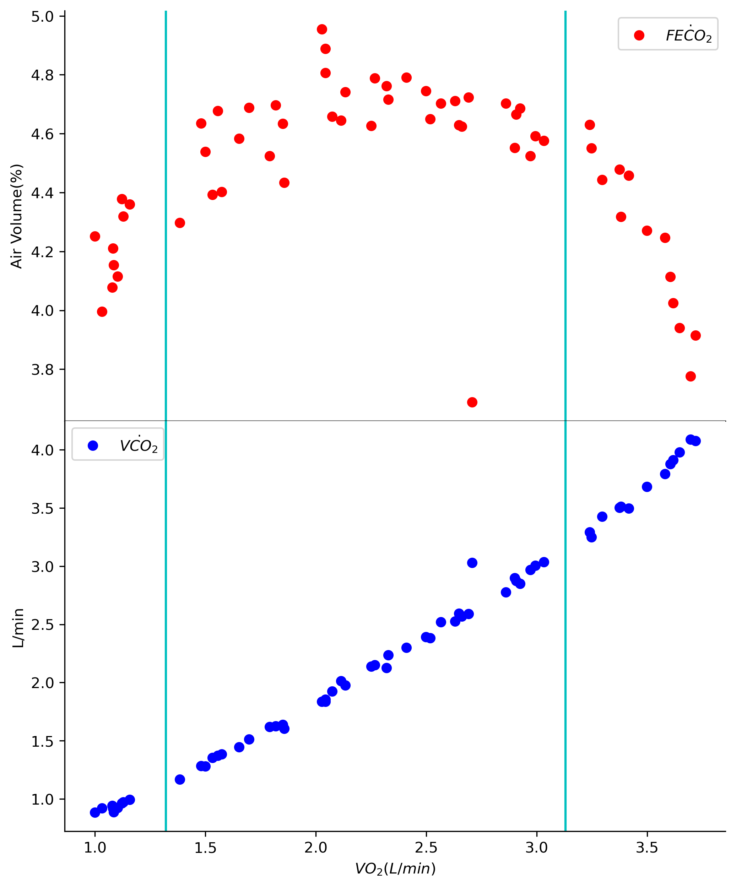

Projects
An Extensive Look At My Projects!
Learning With Scratch
Python As A Tool For Kinesiology
As the top ranked spots science school in North America, research is a cornerstone of kinesiology at the University of Calgary. With a strong emphasis on quality research, navigating through thousands of points of data is essentially. While most people will rely on Excel functions for data management and visualization, I've recently shifted towards utilizing Python for its versaility and efficiency.
 In the image on the right, you can see that FECO2 and VCO2 are both plotted against VO2, in two separate graphs that are stacked on top of each other. In addition to that, I've also attempted to add lines that represent ventilatory thresholds. Doing all of this took a decent amount of time becasue I was still learning, but now that I know what I'm doing, I find it signifcantly easier than trying to format the same graphs in Excel.